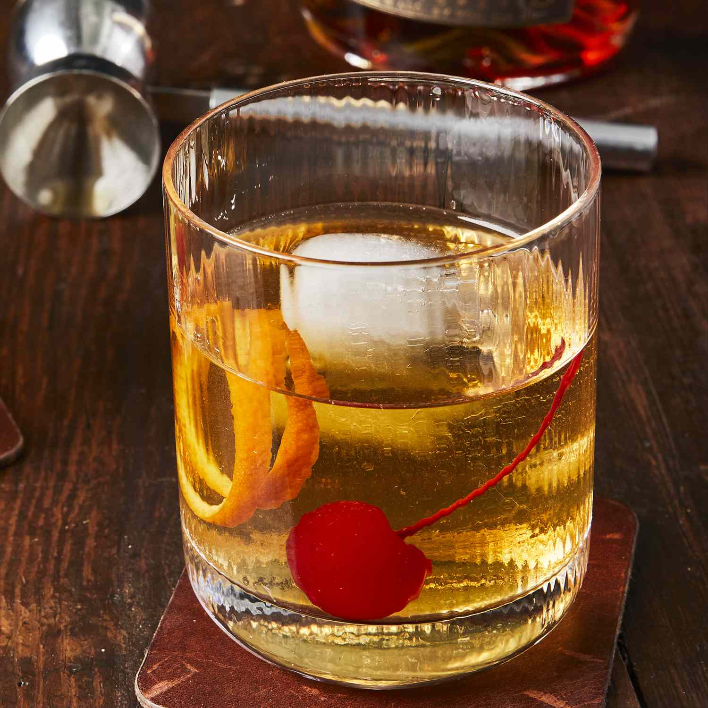

Classic Old Fashioned

Description
The old fashioned is a classic cocktail that was invented in Louisville, KY. You can make it with bourbon, rye, or a blended whiskey. You can also substitute one sugar cube for the simple syrup.
Ingredients
- 2 teaspoons simple syrup
- 1 teaspoon water
- 2 dashes bitters
- 1 cup ice cubes
- 1 (1.5 fluid ounce) jigger bourbon whiskey
- 1 slice orange
- 1 maraschino cherry
Steps
- Gather all ingredients.
-
Pour simple syrup, water, and bitters into a whiskey glass; stir to combine.
- Add ice cubes and pour in bourbon.
- Garnish with orange slice and maraschino cherry.
- Enjoy!